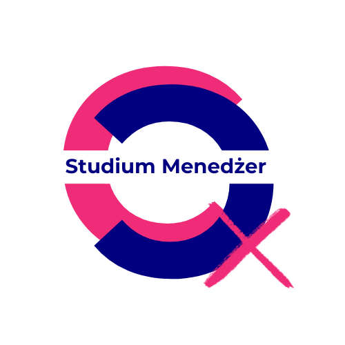

Koncentracja na kluczowych zagadnieniach CC i CX
Program kursu obejmuje zagadnienia istotne dla skutecznego zarządzania zespołami CC oraz budowania najlepszych doświadczeń klientów z obsługi w kanałach zdalnych.
Polskie Stowarzyszenie Marketingu Bezpośredniego we współpracy z Wydziałem Zarządzania UW
Kompleksowy projekt przygotowujący do pracy w zakresie zarządzania jednostkami typu contact center oraz rozwoju kompetencji menedżerskich.

Studium Menedżer Contact Center i Customer Experience to jedyny w Polsce projekt edukacyjny o randze akademickiej dedykowany menedżerom, supervisorom, specjalistom oraz osobom aspirującym do zarządzania jednostkami zdalnej obsługi klienta i sprzedaży oraz całych jednostek contact center.
Organizatorem Studium jest Polskie Stowarzyszenie Marketingu Bezpośredniego, projekt został przygotowany wspólnie z Wydziałem Zarządzania Uniwersytetu Warszawskiego (Fundacja na rzecz Wydziału Zarządzania Uniwersytetu Warszawskiego).
Program Studium, oparty na metodyce Wydziału Zarządzania UW, został dostosowany do specyfiki branży CC. Skupia się na kluczowych kompetencjach liderskich oraz praktycznej wiedzy potrzebnej menedżerom odpowiedzialnym za zdalną komunikację z klientami.
Zajęcia w ramach Studium nie ograniczają się do tradycyjnych szkoleń. Biorąc udział w kursie, przeżyjesz naukę na zupełnie nowy sposób – uczestnicząc w interaktywnych warsztatach, czerpiąc wiedzę i inspiracje bezpośrednio od ekspertów rynku oraz angażując się w owocne dyskusje i wymianę poglądów z innymi uczestnikami.
Kadrę wykładowców Studium tworzą przedstawiciele kadry akademickiej Wydziału Zarządzania UW, którzy od wielu lat uczą zarządzania w oparciu o teorię tej dziedziny oraz własne, ogromne doświadczenia zawodowe, a także wybitni eksperci – top menedżerowie branży CC oraz uznani trenerzy specjalizujący się w zagadnieniach CC i CX.
Kurs jest jedynym na rynku programem rozwojowym ukierunkowanym na doskonalenie kompetencji tworzenia pozytywnych doświadczeń klientów (CX) w ramach komunikacji w kanałach zdalnych (CC).
Program kursu obejmuje zagadnienia istotne dla skutecznego zarządzania zespołami CC oraz budowania najlepszych doświadczeń klientów z obsługi w kanałach zdalnych.
Zajęcia w ramach Studium mają formę wyłącznie praktycznych warsztatów i case study top managerów branży, a podstawową formą nauki są dyskusja i realizacja konkretnych zadań przedmiotowych.
Studium to zarówno wartościowe zajęcia z wykładowcami akademickimi i ekspertami branży, ale także platforma do wymiany wiedzy i inspiracji z innymi menedżerami oraz ekspertami rynku contact center.
Studium to nie tylko okazja do zdobycia konkretnej wiedzy lub umiejętności. Dzięki wielomiesięcznej, interaktywnej formule programu uczestnicy mogą skutecznie wdrożyć nowe kompetencje do praktyki swojego działania oraz zauważalnie rozwinąć postawę menedżerską, stając się partnerem dla najwyższego kierownictwa organizacji.
Prowadzący zajęcia Studium to wybitni przedstawiciele kadry akademickiej Wydziału Zarządzania Uniwersytetu Warszawskiego, uznani trenerzy i eksperci branży CC oraz top menedżerowie branży CC, którzy dzielą się swoimi doświadczeniami i wskazówkami.
Dokument potwierdzający ukończenie Studium to jedyny na rynku certyfikat dla menedżerów branży zdalnej komunikacji z klientami.
Program Studium jest dostępny na stronie Studium.
Jest przeznaczone dla menedżerów, supervisorów, kierowników, specjalistów CC oraz innych osób aspirujących do zarządzania jednostkami zdalnej obsługi klienta i sprzedaży lub ich poszczególnymi obszarami/zespołami.
Niezależnie, czy jesteś początkującym menedżerem, czy masz już doświadczenie w zarządzaniu – Studium będzie dla Ciebie fantastyczną okazją, aby rozwinąć posiadane kompetencje i zweryfikować zawodowe doświadczenia w trakcie dyskusji z wybitnymi ekspertami – wykładowcami Studium oraz innymi uczestnikami programu.
Absolwenci Studium wielokrotnie wskazywali, jak duży impuls w rozwoju ich kariery zawodowej zawdzięczają programowi.
Poznaj nowoczesne narzędzia i metody zarządzania, trenuj umiejętności kierownicze – zostań wszechstronnie wykształconym menedżerem zdalnej komunikacji z klientami.
Poznaj różnorodne podejście do kluczowych zagadnień z zakresu zarządzania, rozwijaj swoje osobiste umiejętności i buduj unikalną postawę menedżerską. Zostań inspirującym przywódcą swojego zespołu, partnerem dla top kierownictwa w swojej organizacji, a także ekspertem na rynku.
Otrzymaj jedyny na rynku certyfikat poświadczający kwalifikacje zawodowe w branży CC i CX wydawany absolwentom Studium przez Polskie Stowarzyszenie Marketingu Bezpośredniego.
Poznaj wybitnych wykładowców uniwersyteckich i praktyków branży CC i CX. Dyskutuj o najlepszych rozwiązaniach z innymi uczestnikami Studium.
Ucz się od ekspertów, którzy podzielą się z Tobą własnym doświadczeniem oraz dobrymi praktykami z własnych organizacji. Analizuj case studies, które są bogatym źródłem praktycznych rozwiązań i inspiracji.
Uczestnicy Studium otrzymują materiały dotyczące branży, które mogą od razu wykorzystać w codziennej pracy. To dostęp do gotowych rozwiązań, bazy pomysłów oraz narzędzi do wykorzystania w pracy menedżera.
Uczestnicy Studium mogą skorzystać z preferencyjnych warunków udziału w innych wydarzeniach organizowanych przez Polskie Stowarzyszenie Marketingu Bezpośredniego dla branży CC (szkolenia, warsztaty, konferencje, gala konkursu Polish Contact Center Awards, itp.).
Dołącz do dyskusji absolwentów i uczestników Studium, a także zaproszonych ekspertów i praktyków rynku na zamkniętej grupie LinkedIn.
Studium to kurs prowadzony w formule studiów zaocznych – zjazdy odbywają się przeciętnie 1–2 razy w miesiącu, głównie w systemie nauczania on-line oraz cztery razy w formule stacjonarnej na Wydziale Zarządzania UW w Warszawie.
Każdy z bloków tematycznych jest samodzielnym pakietem szkoleniowym uwzględniającym case’y, praktyczne przykłady i rzeczowe analizy. Każdy z nich przygotowany został z uwzględnieniem interaktywnej metodyki nauczania (warsztaty, dyskusje, wspólne analizy).
Zgłoszenie z formularza trafia do organizatora Studium, Polskiego Stowarzyszenia Marketingu Bezpośredniego. Informacji na temat Studium udziela Zuzanna Karwacka.
zuzanna.karwacka@Wolisz napisać z własnej skrzynki? Adres powyżej działa tak samo – formularz jest po prostu szybszy.